Profil Profesional
Lulusan Teknik Informatika dengan pemikiran analitis yang kuat, perhatian tinggi terhadap detail, dan pendekatan berbasis data untuk memecahkan masalah kompleks. Terbukti dalam mengoptimalkan efisiensi operasional dan menangani analisis data, didukung oleh pengalaman formal dalam administrasi SDM dan IT troubleshooting. Sangat mudah beradaptasi, memiliki keterampilan komunikasi interpersonal yang kuat, dan siap memanfaatkan keahlian visualisasi data.
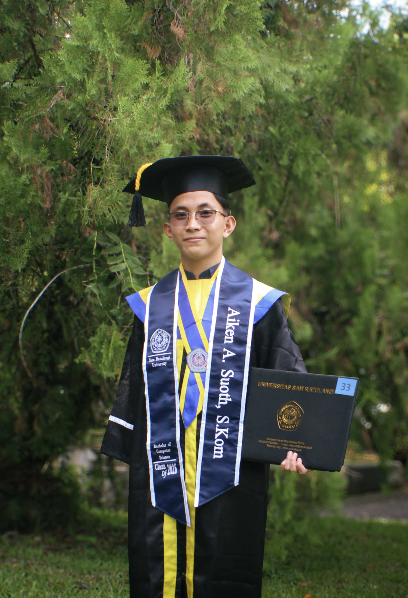
Riwayat Akademik
Universitas Sam Ratulangi (UNSRAT)
S1 Teknik Informatika
2022 – 2026Pekan Ilmiah Mahasiswa Nasional (PIMNAS 38)
Finalis Nasional PKM-GFT
Memimpin tim riset mahasiswa hingga sukses menjadi finalis tingkat nasional pada Pekan Ilmiah Mahasiswa Nasional (PIMNAS) Ke-38 dalam kategori PKM-GFT (Gagasan Futuristik Tertulis) di bawah naungan Kemendiktisaintek.
Berperan dalam perancangan arsitektur sistem blockchain serta mengembangkan konsep utama sistem pendaftaran tanah berbasis digital ("Block Tanah") untuk menciptakan transparansi dan keamanan data pertanahan.
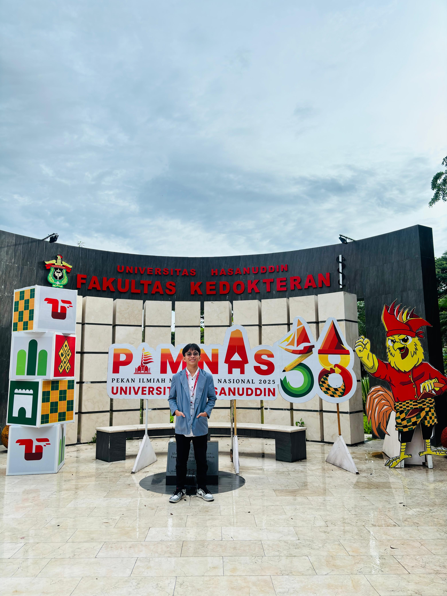
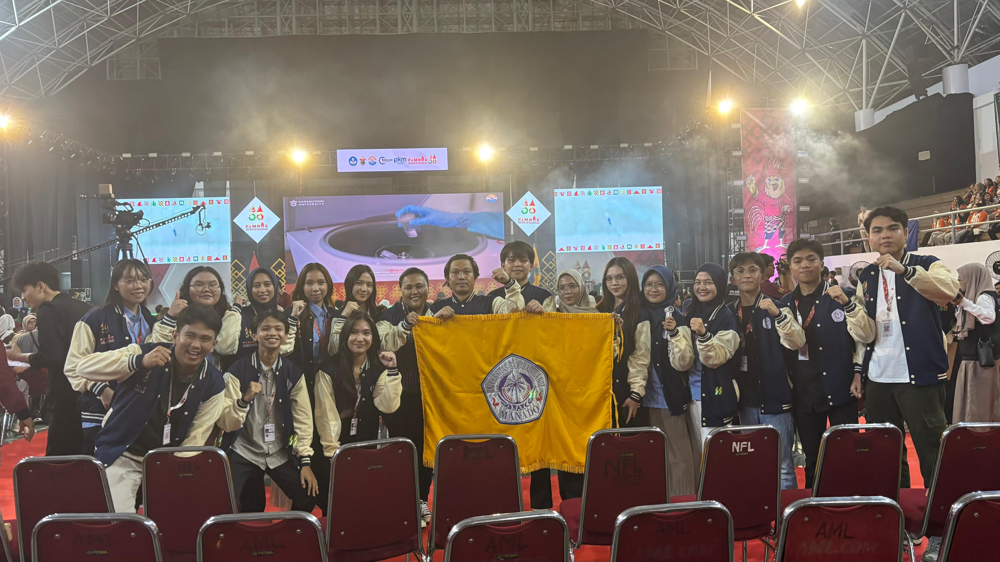
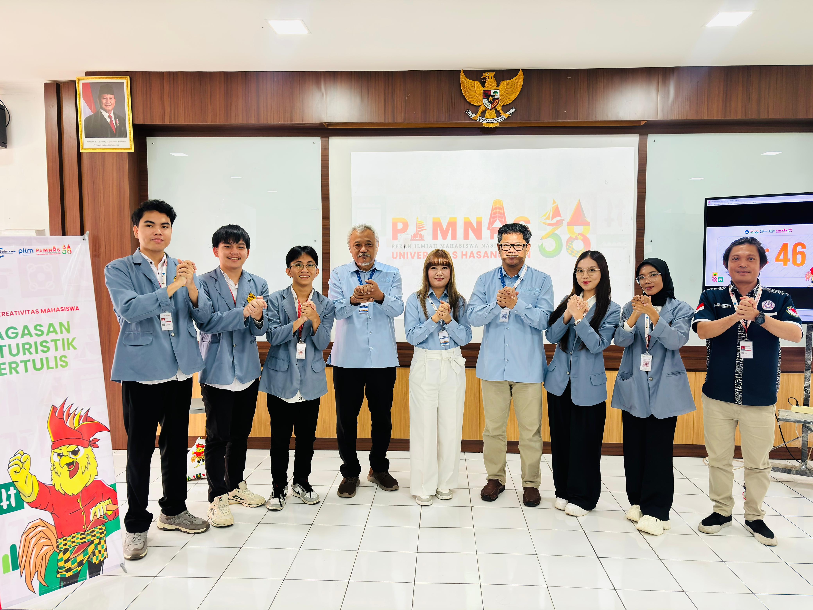
Pengalaman Profesional
Peserta Magang - Bagian Kepegawaian
RSUD ODSK Provinsi Sulawesi Utara
- Mengelola dan memantau data kehadiran pegawai dengan rekapitulasi mingguan dan bulanan, melacak absensi, serta menyortir data tunjangan.
- Mengontrol dan mengadministrasikan berbagai jenis cuti pegawai (sakit, tahunan, dan alasan penting) serta memastikan kesesuaian dengan kuota regulasi yang berlaku.
- Menangani transformasi digital berkas administrasi ke dalam format PDF dan mendata partisipasi pegawai dalam upacara resmi pemerintahan.
- Mengoptimalkan efisiensi operasional kantor harian dengan bertindak sebagai teknisi IT di lokasi, menangani troubleshooting komputer, serta mengonfigurasi driver printer kabel maupun nirkabel (wireless).
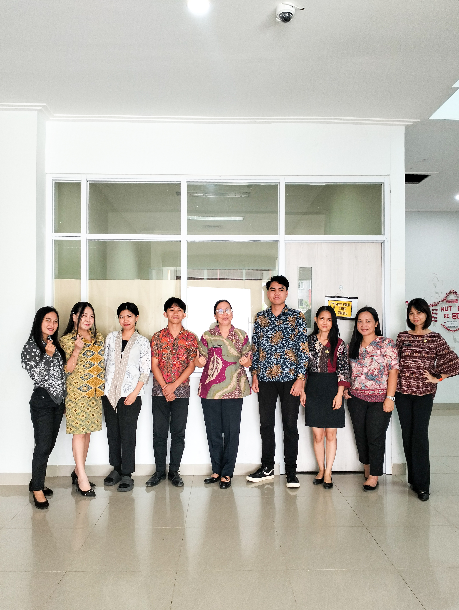
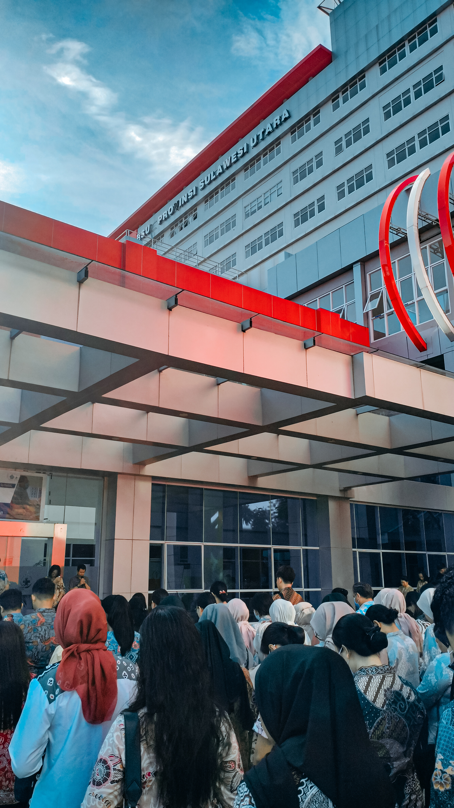
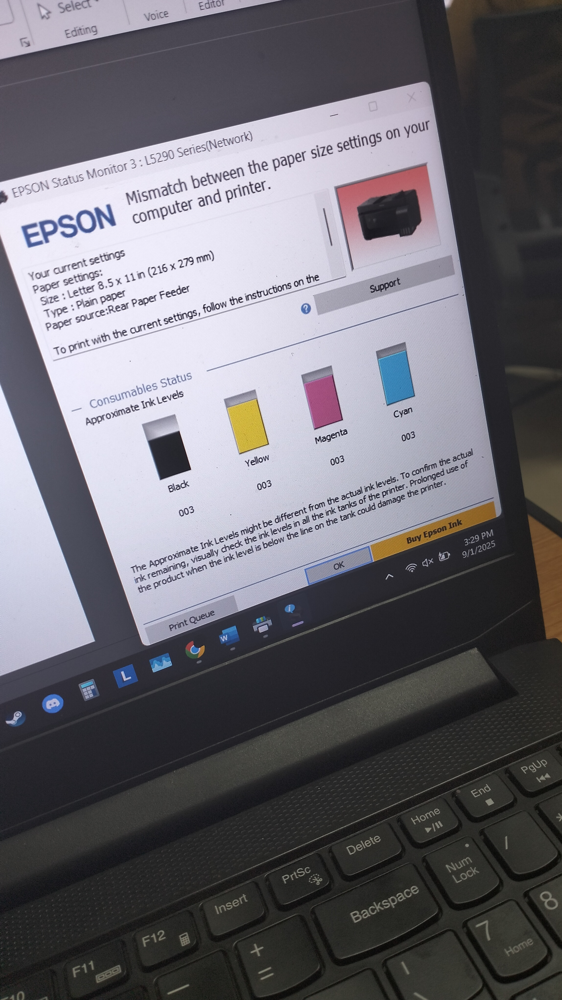
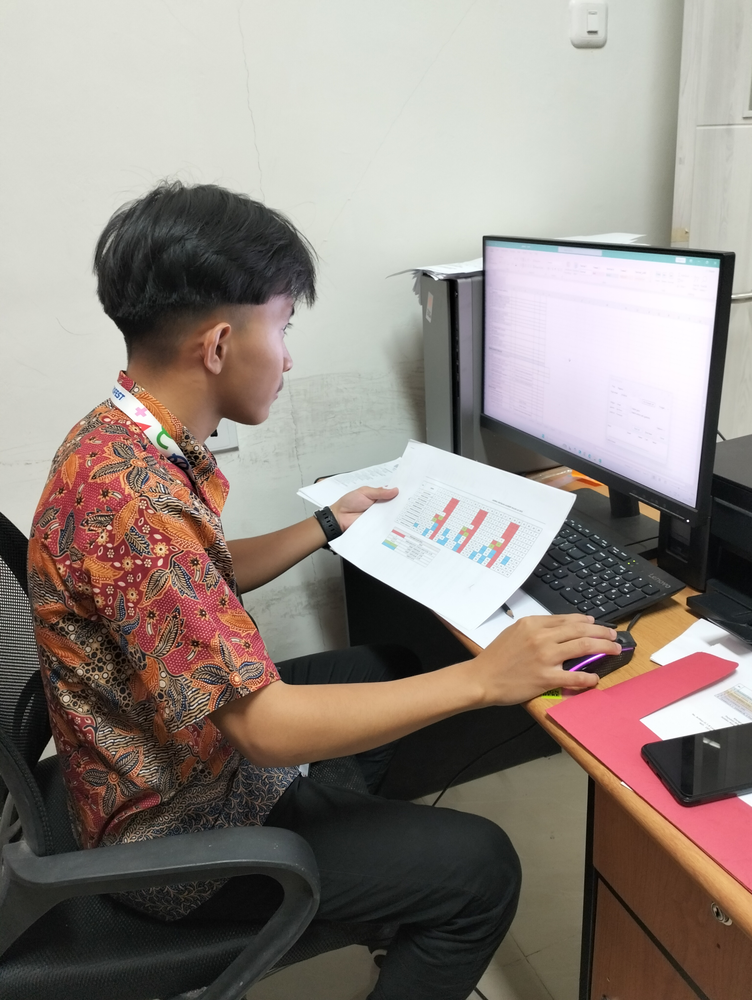
Pengalaman Organisasi
Himpunan Mahasiswa Jurusan Elektro
Bidang Penalaran dan Keilmuwan 2023 – 2024Menyusun dan memproduksi konten edukatif FYI (For Your Information) berbasis informasi ilmiah untuk publikasi media sosial organisasi.


Unsrat IT Community (UNITY)
Divisi Machine Learning 2024 – 2025Mendalami konsep Machine Learning, Data Exploration, serta implementasi algoritma Supervised dan Unsupervised Learning.
.jpeg)

Hard & Soft Skills
Hard Skills
Soft Skills
Projects
Proyek Pengolahan & Visualisasi Data: Laporan Pendaftaran Peserta Pelatihan (ID Training Center)
1. Ringkasan Proyek (Project Overview)
Proyek ini berfokus pada pengolahan data pendaftaran peserta pelatihan, analisis biaya, serta strukturisasi visualisasi laporan pada ID Training Center. Menggunakan Microsoft Excel, proyek ini mencakup otomatisasi perhitungan biaya dan diskon berbasis rumus atau logika, manipulasi data (sorting & filtering), analisis statistik dasar, serta pembuatan dashboard visualisasi berbasis grafik.
2. Ketentuan & Instruksi Kerja (Project Task & Requirements)
- Bagian 1: Laporan Pendaftaran & Tabel Bantu: Input data manual mencakup Kolom Nomor, No. Induk, dan Nama Peserta.
- Aturan Ekstraksi Kode No. Induk (8 Karakter): 2 karakter pertama menentukan Nama Kelas, sedangkan 1 karakter terakhir menentukan Pekerjaan (1 = Pelajar, 2 = Umum).
- Aturan Pengolahan Data & Rumus: Nama Kelas & Biaya diambil dari sheet TABEL BANTU berdasarkan 2 karakter awal No. Induk. Status Pekerjaan diidentifikasi menggunakan logika IF berdasarkan karakter terakhir No. Induk. Diskon 15% diberikan khusus kepada peserta program Digital Marketing ATAU peserta berstatus Pelajar. Total Biaya dihitung dari Biaya dikurangi Diskon.
3. Struktur Basis Data & Tabel Bantu (Lookup Table)
Acuan tabel bantu yang digunakan untuk pemetaan data (lookup):
| Kode Kelas | Nama Kelas | Biaya (Rp) |
|---|---|---|
| CA | Computerized Accounting | Rp 600.000 |
| GD | Graphic Design | Rp 800.000 |
| MO | Microsoft Office | Rp 500.000 |
| SP | Senior Programming | Rp 750.000 |
| DM | Digital Marketing | Rp 850.000 |
4. Implementasi Rumus Excel (Excel Formulas)
-
Nama Kelas:
=VLOOKUP(LEFT(B6,2), 'TABEL BANTU'!$A$5:$B$9, 2, FALSE)(Mengambil 2 karakter pertama No. Induk dan mencocokkannya ke Tabel Bantu). -
Pekerjaan:
=IF(RIGHT(B6,1)="1", "Pelajar", "Umum")(Mengambil 1 karakter terakhir No. Induk. Jika "1" maka Pelajar, selain itu Umum). -
Biaya:
=VLOOKUP(LEFT(B6,2), 'TABEL BANTU'!$A$5:$C$9, 3, FALSE)(Mengambil besaran biaya dasar dari Tabel Bantu). -
Diskon:
=IF(OR(D6="Digital Marketing", E6="Pelajar"), F6*15%, 0)(Jika kelasnya Digital Marketing ATAU statusnya Pelajar, diskon 15% dihitung). -
Total Biaya:
=F6 - G6(Mengurangkan Biaya Dasar dengan Diskon).
5. Ringkasan Laporan & Hasil Analisis Data (Data Analysis Summary)
Dari total 10 peserta yang terdaftar pada periode pendaftaran, berikut ringkasan data yang dihasilkan:
- Total Penerimaan Keseluruhan (Grand Total): Rp 6.017.500
- Rata-Rata Biaya per Peserta: Rp 601.750
- Rata-Rata Biaya khusus Ms. Office: Rp 481.250
- Total Biaya Tertinggi (Per Orang): Rp 800.000 (Graphic Design)
- Total Biaya Terendah (Per Orang): Rp 425.000 (Ms. Office - Pelajar)
Breakdown Penerimaan Berdasarkan Kelas & Pekerjaan:
| Nama Kelas | Total Biaya (Pelajar) | Total Biaya (Umum) | Total Biaya Keseluruhan |
|---|---|---|---|
| Microsoft Office | Rp 425.000 | Rp 1.500.000 | Rp 1.925.000 |
| Graphic Design | - | Rp 1.600.000 | Rp 1.600.000 |
| Computerized Accounting | Rp 1.020.000 | - | Rp 1.020.000 |
| Senior Programming | - | Rp 750.000 | Rp 750.000 |
| Digital Marketing | - | Rp 722.500 | Rp 722.500 |
| TOTAL | Rp 1.445.000 | Rp 4.572.500 | Rp 6.017.500 |
6. Manipulasi Data & Filter (Sort & Filter Requirement)
- Pengurutan Data (Sorting): Data diurutkan berdasarkan Nama Kelas secara Ascending (A-Z) dan Pekerjaan secara Descending (Z-A).
- Penyaringan Data (Filtering): Menyaring daftar peserta hanya untuk Nama Kelas = Microsoft Office dan Pekerjaan = Umum, menghasilkan 3 peserta (Djamilah, Chaerudin, dan Erza Syafi'e) dengan total kontribusi penerimaan Rp 1.500.000.
7. Visualisasi Data (Dashboard & Charts)
- Clustered Bar Chart: Menggambarkan perbandingan kontribusi total biaya antar jenis kelas di mana Microsoft Office menjadi penyumbang pendapatan terbesar.
- Pie Chart (Segmentasi Pekerjaan Umum): Graphic Design menyumbang 35%, Microsoft Office 33%, Senior Programming 16%, dan Digital Marketing 16%.
8. Dokumentasi & Hasil Visualisasi
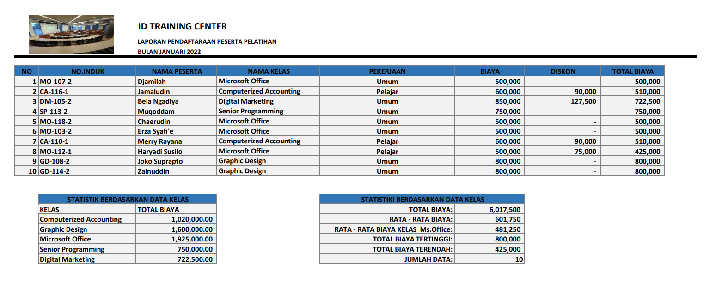

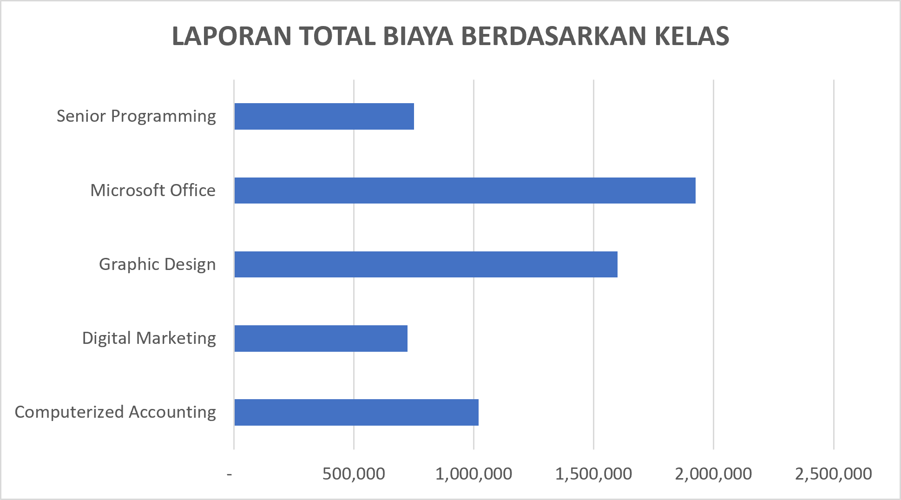
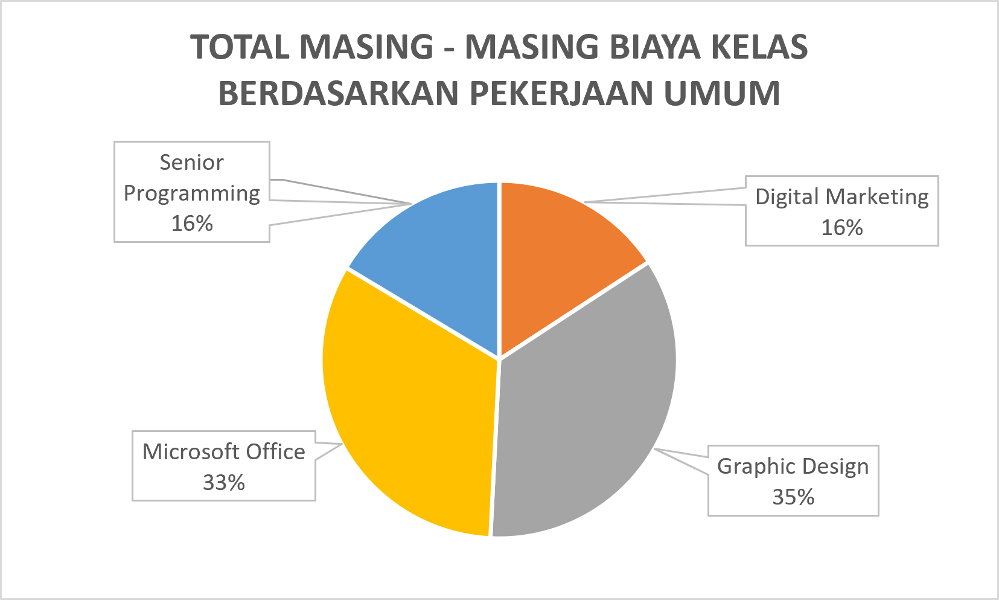
Customer Segmentation & Classification pada Data Transaksi Bank
1. Ringkasan Singkat (Project Overview)
Membangun sistem segmentasi pelanggan bank menggunakan K-Means Clustering pada data transaksi (2.500+ baris, 16 fitur), lalu melatih model klasifikasi (Decision Tree, Logistic Regression, Naive Bayes) untuk memprediksi segmen pelanggan baru secara otomatis. Model klasifikasi terbaik (Naive Bayes) mencapai akurasi ~98%, dan hasil clustering divalidasi dengan Silhouette Score 0.497.
2. Latar Belakang & Tujuan (Background & Objectives)
Dalam industri perbankan/ritel, memahami perilaku nasabah adalah kunci untuk strategi pemasaran dan deteksi risiko yang lebih baik. Project ini bertujuan untuk:
- Mengelompokkan nasabah ke dalam segmen-segmen berdasarkan pola transaksi mereka (pendekatan unsupervised learning).
- Membangun model prediktif yang dapat mengklasifikasikan nasabah baru ke segmen yang tepat tanpa perlu menjalankan ulang proses clustering (pendekatan supervised learning).
3. Dataset
- Sumber: Data transaksi perbankan (16 kolom, kurang lebih 2.500 baris) mencakup jumlah transaksi, tanggal, jenis transaksi, lokasi, channel, usia nasabah, pekerjaan, durasi transaksi, jumlah percobaan login, saldo akun, dan tanggal transaksi sebelumnya.
- Karakteristik data: Kombinasi fitur numerik dan kategorikal, mengandung missing values, data duplikat, dan outlier sehingga membutuhkan tahap pembersihan data yang menyeluruh.
4. Metodologi & Tahapan Pipeline
Tahap 1: Clustering (Unsupervised Learning)
- EDA & Preprocessing: Analisis korelasi, penanganan missing value (imputasi median), feature scaling dengan MinMaxScaler, encoding dengan LabelEncoder, serta penanganan outlier menggunakan IQR.
- Pemodelan & Evaluasi: Menentukan 4 cluster optimal menggunakan Elbow Method, melatih model K-Means, reduksi dimensi dengan PCA, serta evaluasi menggunakan Silhouette Score sebesar 0.497.
Tahap 2: Classification (Supervised Learning)
- Data Splitting: Membagi data hasil clustering menjadi data latih dan data uji (80:20) dengan one-hot encoding.
- Pemodelan & Perbandingan: Melatih dan membandingkan Decision Tree, Logistic Regression, dan Gaussian Naive Bayes.
5. Profil & Karakteristik 4 Segmen Nasabah (Cluster Profiling)
Berdasarkan analisis hasil clustering K-Means (dengan Silhouette Score 0.497), nasabah terbagi secara statistik ke dalam 4 segmen utama berikut:
| Segmen (Cluster) | Karakteristik Transaksi & Saldo | Profil Demografis & Perilaku | Rekomendasi Strategi Bisnis |
|---|---|---|---|
| Cluster 0: Pengguna Nilai Rendah & Stabil | Rata-rata transaksi ~$242, saldo rata-rata ~$5.032 | Usia rata-rata 45 tahun, penggunaan terbanyak di channel ATM & Online, login aman tanpa kendala. | Program edukasi perbankan digital & insentif transaksi berkala untuk meningkatkan keaktifan. |
| Cluster 1: Penabung Saldo Tinggi | Rata-rata saldo tertinggi (~$5.368), nilai transaksi ~$241 | Nasabah pasif bertransaksi namun memiliki ketahanan finansial & akumulasi tabungan paling tinggi. Lebih sering menggunakan layanan kantor cabang (Branch) dan ATM. | Penawaran produk investasi jangka panjang, deposito berjangka, dan layanan Wealth Management. |
| Cluster 2: Pengguna Muda & Aktif | Rata-rata transaksi ~$254, saldo rata-rata ~$5.025 | Segmen usia paling muda (~42 tahun), sangat adaptif pada teknologi digital & transaksi elektronik. | Promo cashback, loyalty points, serta campaign gaya hidup/e-commerce. |
| Cluster 3: Pengguna Nilai Tinggi & Utama | Rata-rata nominal transaksi terbesar (~$261) & durasi transaksi paling lama (~124 detik) | Memiliki daya beli (purchasing power) tinggi dengan frekuensi belanja & transaksi finansial yang intensif. | Layanan nasabah prioritas (VIP), penawaran kartu kredit limit tinggi, & reward eksklusif. |
6. Hasil Evaluasi Model Klasifikasi
| Model | Accuracy | Precision | Recall | F1-Score |
|---|---|---|---|---|
| Logistic Regression | 82.2% | 82.0% | 82.2% | 82.0% |
| Naive Bayes | 98.0% | 98.0% | 98.0% | 98.0% |
Catatan: Melakukan tuning pada Logistic Regression menggunakan GridSearchCV meningkatkan akurasi dari 82.2% menjadi 89.4%. Seluruh model disimpan dalam format .h5 menggunakan joblib.
7. Hasil Utama & Skill yang Ditunjukkan
- Berhasil membagi nasabah ke dalam 4 segmen berbeda secara statistik dengan Silhouette Score 0.497.
- Model Naive Bayes mampu memprediksi segmen nasabah baru dengan akurasi ~98%.
- Penerapan end-to-end machine learning workflow, feature engineering, komparasi model, hyperparameter tuning, dan model persistence.
Sistem Pakar Diagnosa Penyakit Umum Pada Balita Berbasis Web
1. Ringkasan Proyek (Project Overview)
Aplikasi Sistem Pakar Berbasis Web yang dikembangkan untuk membantu orang tua dan tenaga medis dalam melakukan deteksi dini serta diagnosis awal penyakit umum pada balita. Aplikasi ini dirancang secara interaktif, responsif, dan mudah digunakan untuk memberikan diagnosa sementara serta rekomendasi penanganan pertama berdasarkan kombinasi gejala yang dipilih.
2. Latar Belakang & Permasalahan (Problem Statement)
- Tingginya Risiko Kesehatan Balita: Angka kesakitan pada balita cukup tinggi, di mana deteksi dini sangat krusial untuk mencegah komplikasi serius.
- Keterbatasan Akses & Pengetahuan: Kurangnya pengetahuan dasar kesehatan pada orang tua serta keterbatasan akses layanan kesehatan di daerah tertentu sering memperlambat penanganan awal.
- Solusi: Hadirnya platform digital interaktif berbasis kecerdasan buatan (Expert System) yang dapat diakses dengan cepat sebagai sarana skrining mandiri.
3. Metodologi & Arsitektur Sistem Pakar
Sistem pakar ini mentransformasikan pengetahuan medis spesialis anak ke dalam struktur berbasis aturan (rule-based):
- Sumber & Akuisisi Pengetahuan (Knowledge Acquisition): Pengumpulan data fakta medis melalui studi literatur dan situs medis terverifikasi yang ditinjau oleh pakar/dokter spesialis anak (dr. Praevilia M. Salendu, SpA(K) & dr. M. Dejandra Rasnaya).
- Representasi Pengetahuan (Knowledge Representation): Menggunakan Aturan Produksi (Production Rules) bertipe IF-THEN.
- Mesin Inferensi (Inference Engine): Menggunakan Forward Chaining (penalaran maju). Sistem memulai proses penalaran dari kumpulan fakta/gejala yang dimasukkan oleh pengguna menuju pengambilan kesimpulan diagnosis.
4. Fitur Utama Aplikasi
- Checklist Gejala Dinamis & Responsif: Tampilan grid UI yang intuitif mempermudah pengguna memilih kombinasi gejala balita.
- Validasi & Filter Antar-Gejala (Smart Symptom Filter): Sistem secara otomatis menonaktifkan (disable) pilihan gejala yang tidak relevan berdasarkan opsi aktif pengguna untuk menjaga akurasi kombinasi.
- Hasil Diagnosa Instan & Edukatif: Menampilkan penjelasan diagnosis penyakit beserta pertolongan pertama/saran penanganan yang aman (seperti pemberian oralit, kompres hangat, atau anjuran segera ke dokter).
- Fungsi Reset & Simulasi Ulang: Memungkinkan pengujian ulang kondisi/gejala secara efisien.
5. Sumber Pengetahuan & Daftar Kode Gejala (Rule Base & Knowledge Source)
Berikut adalah rincian lengkap basis pengetahuan yang digunakan oleh sistem untuk menerjemahkan kode gejala (A1 hingga A39), daftar diagnosis (P1 hingga P10), serta aturan inferensi:
| Kode Gejala | Deskripsi Gejala | Diagnosis Terkait | Basis Aturan (Rule Base) |
|---|---|---|---|
| A1 | Muntah | Infeksi virus = P1 | IF A3 AND A2 AND A11 AND A23 THEN P1 |
| A2 | Lemas | ISPA = P2 | IF A15 AND A5 AND A16 AND A24 AND A25 AND A39 THEN P2 |
| A3 | Demam | Infeksi saluran pencernaan = P3 | IF A9 AND A1 AND A3 AND A22 AND A27 THEN P3 |
| A4 | Nyeri telinga | Konstipasi = P4 | IF A10 AND A30 OR A28 OR A29 OR A7 THEN P4 |
| A5 | Pilek | Alergi = P5 | IF A13 AND A8 AND A31 AND A32 AND A20 THEN P5 |
| A6 | Meradang | Epilepsi = P6 | IF A14 AND A33 OR A18 THEN P6 |
| A7 | Susah BAB | Infeksi telinga tengah = P7 | IF A4 AND A3 AND A35 OR A34 THEN P7 |
| A8 | Gatal | Radang tenggorokan = P8 | IF A19 AND A21 THEN P8 |
| A9 | Diare | Kurang gizi / gangguan pertumbuhan = P9 | IF A37 AND A38 OR A17 OR A12 OR A36 THEN P9 |
| A10 | Perut kembung | Eksim = P10 | IF A6 AND A8 AND A20 AND A26 THEN P10 |
| A11 | Nafsu makan berkurang | - | - |
| A12 | Berat badan tidak bertambah | - | - |
| A13 | Ruam merah | - | - |
| A14 | Tatapan Kosong | - | - |
| A15 | Batuk | - | - |
| A16 | Hidung tersumbat | - | - |
| A17 | Pertumbuhan lambat | - | - |
| A18 | Kejang-kejang | - | - |
| A19 | Kesulitan Menelan | - | - |
| A20 | Kulit kering | - | - |
| A21 | Sakit Tenggorokan | - | - |
| A22 | Sesak Napas | - | - |
| A23 | Kelelahan | - | - |
| A24 | Suara serak | - | - |
| A25 | Nafas pendek dan cepat | - | - |
| A26 | Benjolan kecil | - | - |
| A27 | Nyeri perut | - | - |
| A28 | Darah pada tinja | - | - |
| A29 | Mengejan keras saat BAB | - | - |
| A30 | Nyeri saat BAB | - | - |
| A31 | Bintil-bintil kecil | - | - |
| A32 | Bengkak | - | - |
| A33 | Gerakan tubuh yang tidak biasa | - | - |
| A34 | Keluar cairan dari telinga | - | - |
| A35 | Gangguan pendengaran | - | - |
| A36 | Tubuh kurus | - | - |
| A37 | Otot mengecil | - | - |
| A38 | Mudah sakit | - | - |
| A39 | Bersin-bersin | - | - |
6. Dokumentasi Proyek & Visualisasi UI


7. Impact & Key Learnings
- Berhasil mengimplementasikan metode penalaran AI Forward Chaining ke dalam aplikasi web murni berbasis Front-End tanpa ketergantungan heavy framework.
- Menyediakan platform edukatif bagi orang tua untuk memahami gejala umum penyakit balita dan tindakan pertolongan pertamanya secara cepat dan mudah.
Sertifikat Pelatihan & Kompetensi
Berikut adalah sertifikat kompetensi dan pelatihan profesional yang telah diselesaikan:
Operator Komputer Madya
Badan Nasional Sertifikasi Profesi (BNSP) / LSP Teknologi Digital
Dasar Visualisasi Data
Dicoding Indonesia
Dasar Data Science
Dicoding Indonesia
Machine Learning untuk Pemula
Dicoding Indonesia
Penghargaan Akademik
Berikut adalah surat keputusan dan surat pengantar penghargaan dari rektor atas prestasi tingkat nasional:
SK Bebas Skripsi Penuh
Penghargaan Prestasi Tingkat Nasional (2025)
Surat Pengantar Bebas KKT
Penghargaan Prestasi Tingkat Nasional (2025)
Mari Terhubung & Berkolaborasi
Saya terbuka untuk peluang karier, kolaborasi proyek data, maupun diskusi profesional.